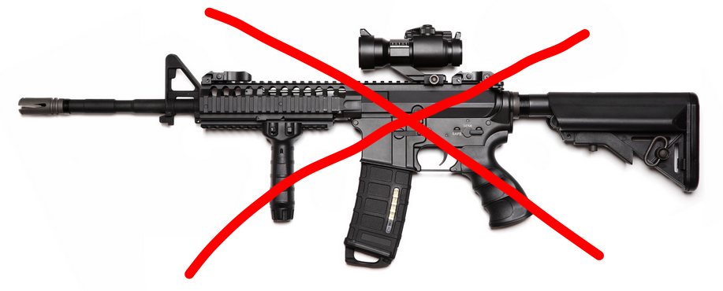

Drum & Bugle Corps
Lighning Talk
WAIT!
“The singular and plural forms of the word are spelled the same way, however they are pronounced differently. The singular form is pronounced /kɔər/ (KOR) and the plural form is pronounced /kɔərz/ (KORZ).”
tl;dr What is Drum Corps?
- Musical marching unit (similar to a marching band)
- Brass and percussion instruments, and color guard
- Perform the same 8-12 minute "show" each year
- Coordinated (and memorized) movement and music
- Perform in judged competitions, parades, etc
- Uniforms, hats, spandex
- Typically non-profit organization
Horn Line

Horn Line

Drum Line
Drum Line: Battery

Drum Line: Pit / Front Ensemble

Color Guard: Flags

Color Guard: Rifles
Color Guard: Rifles

Drum Corps International (DCI)

- Highly competitive
- Members must be 14-21 years old
- Intense schedule: Memorial Day to Labor Day
- Limit of 150 members
- World Class / Open Class
Drum Corps Associates (DCA)

- ...not as competitive
- All ages
- Less travel
DCI Championships

Controversy
- Amplification
- Electric and voice instrumentation
- Other instruments (woodwinds, trombones)
- Drum Corps Hipsters
Typical Day
Sleeping

"Free Day"
One per month
Laundry
Rehearse

Such Rehearse

Meals

Show

Transportation

Transportation

Transportation